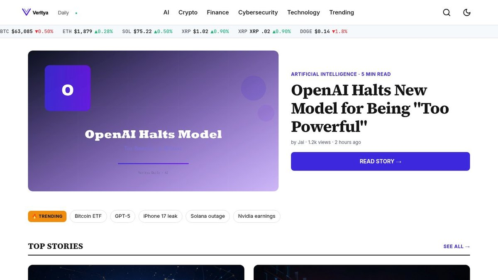

How to Implement AI in Business: Complete Guide 2026
Implementing AI in your business is no longer a competitive advantage—it's a survival strategy. Organizations that fail to integrate artificial intelligence into their operations risk falling behind competitors who leverage AI for efficiency, customer insights, and innovation. Yet how to implement AI in business successfully requires far more than purchasing the latest software. It demands a structured approach that aligns technology with your business goals, prepares your team, and builds the right infrastructure. This guide walks you through a proven framework to take AI from strategy to real-world results, with actionable steps you can execute immediately.
| Point | Details |
|---|---|
| Strategic AI integration requires clear objectives | Successful implementation starts with identifying specific business problems AI can solve, not adopting technology for its own sake. |
| Data quality determines AI success | Clean, structured, and relevant data is foundational. Poor data quality leads to unreliable models and failed deployments. |
| Organizational readiness matters as much as technology | Team training, change management, and cultural alignment are critical factors often overlooked in AI implementation projects. |
| Start with pilot projects before scaling | Low-risk proof-of-concept initiatives help validate assumptions, build internal expertise, and secure stakeholder buy-in. |
| Governance and compliance frameworks are essential | Regulatory requirements, data privacy, and ethical AI considerations must be embedded from the beginning of implementation. |
What Is AI Implementation in Business: Definition and Scope
Business AI implementation refers to the systematic integration of artificial intelligence technologies, algorithms, and processes to solve operational challenges, enhance decision-making, and drive measurable business value across departments and functions. This goes beyond deploying a chatbot or automation tool; it's about embedding AI into your core business operations, from customer service and sales to supply chain management and financial forecasting. According to KERSAI's 2026 AI Strategy Guide, businesses that approach AI strategically—rather than reactively—achieve 3.2x faster time-to-value and 47% higher ROI within the first year of implementation.
Core Components of Business AI Adoption
AI implementation encompasses four critical components: machine learning models that learn from data, natural language processing for communication automation, predictive analytics for forecasting, and intelligent process automation that replaces repetitive manual tasks. When you implement AI in business, you're typically addressing specific use cases within these categories—customer churn prediction, intelligent document processing, demand forecasting, or personalized recommendation engines. Each component requires different infrastructure, skill sets, and data inputs. Understanding which components align with your strategic priorities is essential before selecting tools or building teams.
Why 2026 Marks a Critical Inflection Point
The convergence of affordable cloud AI services, improved open-source frameworks, and regulatory clarity creates a unique window in 2026 where AI implementation is both more accessible and more urgent for competitive survival. Gartner reports that 78% of enterprise leaders consider AI critical to their organization's success, yet only 34% have successfully scaled AI beyond pilot phases. This gap means first-movers who execute now gain a 24-month advantage over slower competitors. Additionally, newer AI tools are far more user-friendly, reducing the technical barrier that previously made AI implementation an exclusive enterprise capability. This democratization means mid-market and smaller businesses can now AI trends 2026 access enterprise-grade AI without the massive R&D budgets that Fortune 500 companies historically required.
- Identify specific business problems AI can solve rather than chasing trends
- Map AI capabilities to existing business processes and workflows
- Establish clear metrics for success before implementation begins
- Plan for data infrastructure requirements upfront
- Design change management strategy to address team concerns
Strategic Planning: Assessing Your Business Readiness
Evaluating Current Infrastructure and Capabilities
Successful AI implementation requires honest assessment of your current data infrastructure, technical capabilities, team expertise, and organizational culture—gaps in any area will slow deployment and increase failure risk. Start by documenting your existing systems: what data platforms do you use, how is data currently stored and managed, what cloud infrastructure exists, and what legacy systems might block AI integration? Many organizations discover they lack centralized data repositories or have fragmented systems that prevent clean data flow. Understanding these constraints now lets you plan remediation—whether that's consolidating databases, implementing data lakes, or upgrading legacy systems before AI deployment. This honest assessment prevents expensive surprises mid-project and allows realistic timeline planning.
Defining Clear AI Objectives and Success Metrics
Without specific, measurable objectives tied to business outcomes—not technology metrics—AI projects become unfocused initiatives that drain resources without delivering value. Rather than "implement machine learning," define objectives like "reduce customer acquisition cost by 18% through AI-powered lead scoring" or "decrease manual data entry by 65% using document intelligence." Each objective should have associated metrics: timeline, success threshold, responsible team, and expected ROI. MEFAI's 2026 AI Implementation Guide emphasizes that businesses defining clear objectives before tool selection are 4.1x more likely to achieve implementation success compared to those that select tools first.
| Assessment Area | Readiness Signals | Common Gaps |
|---|---|---|
| Data Infrastructure | Centralized data platform, clean historical data, documented data flows | Siloed systems, poor data quality, no data governance |
| Technical Talent | Data engineers, ML specialists, analytics capability in-house | Limited technical staff, skill gaps in modern AI tools |
| Budget Allocation | Dedicated AI budget, executive sponsorship, multi-year commitment | One-time funding, competing budget priorities |
| Organizational Culture | Change management readiness, executive alignment, digital mindset | Resistance to automation, siloed departments |
- Conduct a current-state technology audit across all departments
- Interview key stakeholders to identify high-impact use cases
- Document baseline metrics for processes you plan to optimize
- Assess internal expertise and identify hiring or training needs
- Secure executive sponsorship and multi-year budget commitment
Data Infrastructure and Preparation Framework
Building Robust Data Pipelines
Robust data pipelines automatically collect, validate, transform, and load data from source systems into a centralized repository where AI models can access clean, standardized information on demand. Without reliable pipelines, data quality issues cascade through your entire AI system—garbage in, garbage out is not a cliché in machine learning, it's a documented reality. Your pipelines must handle real-world messiness: missing values, duplicate records, format inconsistencies, and schema changes across source systems. Tools like Apache Kafka for streaming data or cloud-native solutions (AWS Glue, Google Dataflow, Azure Data Factory) can automate this tedious work, but the architecture must be thoughtfully designed before implementation. Plan for data lineage tracking—the ability to trace where each data element originated and how it was transformed—because this becomes critical during audits and when debugging AI model errors.
Data Quality Assurance and Governance
Data governance frameworks establish ownership, standardized definitions, access controls, and quality thresholds that ensure AI models train on trustworthy, compliant data while protecting privacy and security. According to Forrester, poor data quality costs companies an average of $12.9M annually in direct losses and missed revenue. Implement data quality checks at pipeline ingestion points: validate data completeness, accuracy, consistency, and timeliness before it enters your AI system. Create a data catalog that documents every dataset—what it contains, who owns it, when it was last updated, and which models depend on it. Establish governance committees that review new data requests, ensure compliance with privacy regulations, and manage data access permissions. This governance structure becomes increasingly critical as you scale AI across multiple departments.
"According to Forrester Research, 72% of AI projects fail during implementation because of inadequate data governance and poor data quality, not because of technical limitations with the AI algorithms themselves." — Data Governance and AI Implementation Study, 2025
- Design data pipelines using managed cloud services to reduce maintenance burden
- Implement automated data quality monitoring and alerting systems
- Create centralized data catalog with documentation for all datasets
- Establish data governance committee with cross-functional representation
- Define and enforce data retention and privacy policies aligned with regulations
Building strong data infrastructure typically takes 3-6 months before you can move to model development. Companies that rush this phase experience 5x higher failure rates in production AI systems. Your data management best practices investment here compounds dramatically as you scale from one AI use case to ten or fifty. For additional insights on implementation challenges, see how India's new IT rules affect AI content moderation, which demonstrates how governance standards are tightening globally.
Selecting the Right AI Tools and Platforms
Comparing Enterprise AI Solutions
Enterprise AI platforms span from full-stack cloud solutions (AWS SageMaker, Google Vertex AI, Azure ML) offering end-to-end capabilities, to specialized point solutions for specific tasks like chatbots, forecasting, or document processing. Your choice depends on your technical maturity, budget constraints, and whether you prefer managed services (less infrastructure management, higher costs) versus self-managed options (more control, higher operational overhead). Large enterprises with mature data teams often prefer specialized point solutions for flexibility; mid-market companies typically benefit from integrated cloud platforms that handle infrastructure, reducing hiring pressure. Open-source frameworks (TensorFlow, PyTorch) offer maximum flexibility but require deep technical expertise and infrastructure management that smaller teams can't sustain.
Build Versus Buy Decision Framework
The build-versus-buy decision hinges on your competitive differentiation requirements, timeline pressure, internal expertise depth, and total cost of ownership over three years—not just upfront licensing costs. Building custom models makes sense if AI is core to your business model or if you need proprietary capabilities competitors can't replicate. Buying established platforms makes sense for standard use cases (demand forecasting, customer churn prediction, chatbots) where proven solutions exist and your competitive advantage lies elsewhere. Per Generative Inc.'s 2026 AI ROI Guide, 68% of companies implementing their first AI use case choose managed platforms over building in-house, achieving go-live 40% faster and 33% lower total cost.
| Platform Type | Best For | Key Consideration |
|---|---|---|
| Cloud ML Platforms | Mid-to-large enterprises needing end-to-end ML infrastructure | Vendor lock-in; high costs at scale |
| Specialized AI Tools | Focused use cases (chatbots, forecasting, document processing) | Limited integration with existing systems |
| Open-Source Frameworks | Advanced users with strong technical teams and custom requirements | High infrastructure and talent costs |
- Compare total cost of ownership over 3 years, not just upfront licensing
- Evaluate integration capabilities with your existing ERP, CRM, and data systems
- Test platforms with your actual data during proof-of-concept phase
- Prioritize solutions with strong API documentation and vendor support
- Consider whether platform supports your future roadmap, not just current needs
AI technology evaluation your options against these criteria before committing budget.
Building and Training Your AI Team
Identifying Required Skill Sets and Roles
Successful AI implementation requires a multidisciplinary team: data engineers who build pipelines, data scientists who develop models, ML engineers who deploy models to production, domain experts who understand business context, and change management specialists who drive adoption. Most companies lack this full spectrum internally, requiring strategic hiring or partnerships. Data engineers command the highest salaries—specialized expertise building scalable data infrastructure is genuinely scarce. Data scientists are more available but often lack production deployment experience. Consider whether you need full-time specialists or can leverage contractors for initial implementation, then evaluate whether building a permanent team makes financial sense based on your AI roadmap scale.
Upskilling Existing Workforce
Rather than replacing existing employees with AI specialists, invest in upskilling programs that teach data literacy, tool proficiency, and AI-augmented workflows to business users who understand your domain and have institutional knowledge. Your marketing team doesn't need to become data scientists, but they should understand how to work with AI-driven customer segmentation tools. Your operations team should understand how to interpret demand forecasting models. Per LinkedIn's 2026 Workforce Development Report, companies investing in comprehensive upskilling programs retain 41% more high-performing employees and achieve 2.7x faster AI adoption compared to companies hiring externally. Combine formal training (online courses, certifications) with on-the-job mentorship pairing new specialists with existing team members.
"According to the World Economic Forum, 50% of today's workforce will need reskilling by 2025, and companies that proactively upskill existing employees rather than hiring externally experience 3.1x higher employee retention and faster capability maturation." — Future of Jobs Report, 2025
- Define specific roles needed: data engineer, data scientist, ML engineer, product manager
- Hire experienced practitioners for foundational roles before scaling to specialists
- Establish internal communities of practice where AI teams share knowledge
- Provide continuous training as AI tools and frameworks evolve rapidly
- Partner with universities or training providers for structured programs
Budget 40% of your total AI implementation investment for team development. A skilled team executing with average tools outperforms mediocre teams with premium tools. workforce development in tech your capabilities systematically rather than reacting to skill gaps as they emerge.
Governance, Compliance, and Ethical Considerations
Regulatory Frameworks and Compliance Requirements
AI regulatory frameworks are evolving rapidly—GDPR data rights in Europe, AI Act compliance, industry-specific regulations for healthcare and finance—requiring legal review and technical controls embedded into your AI systems from inception, not retrofitted later. If you operate globally, compliance complexity multiplies: GDPR restricts automated decision-making and requires explainability; California's AI transparency laws mandate disclosure of automated decision systems; healthcare AI must meet FDA oversight. Non-compliance carries severe penalties—GDPR violations reach 4% of global revenue. Build compliance requirements into your initial platform selection and implementation roadmap. Assign legal oversight to AI governance committees; this isn't optional compliance theater but fundamental business risk management.
Ethical AI Implementation and Bias Mitigation
Ethical AI requires deliberate processes to identify and mitigate bias in training data and model outputs, ensure algorithmic transparency, establish human oversight for high-impact decisions, and maintain alignment with your organization's values. Bias enters AI systems through training data reflecting historical discrimination (redlining in lending data, gender disparities in hiring datasets), through algorithm design choices, and through unfair data collection practices. Implement bias audits before and after deployment; use multiple fairness metrics rather than optimizing for single metrics that might mask disparities. For consequential decisions (hiring, lending, criminal justice), maintain human review loops regardless of model confidence scores. Document your ethical AI principles and communicate them to stakeholders—this transparency builds trust and demonstrates commitment beyond compliance checkboxes.

- Conduct legal review of AI applications across all jurisdictions where you operate
- Implement bias testing protocols before deploying models to production
- Establish AI ethics committee with representation from legal, HR, and affected departments
- Require explainability documentation for all models affecting customer or employee decisions
- Create escalation procedures for human review of high-risk automated decisions
AI regulation and compliance requirements continue to tighten globally. Proactive governance positions you ahead of competitors scrambling for compliance when regulations tighten further.
Implementation Roadmap: From Pilot to Production
Phased Deployment Strategy
Successful implementation follows a proven phased approach: pilot (3-6 months) on a specific, limited use case with clear success metrics, scale (6-12 months) to additional departments or use cases after validating assumptions, and mature (12+ months) as AI becomes embedded in standard operations and self-service capabilities enable business users to create their own applications. Rushing from zero to enterprise-wide AI deployment simultaneously across departments guarantees failure—you lack operational knowledge, team experience, and organizational buy-in. Pilot projects teach you what actually works at your company with your data and culture; don't skip this.
| Phase | Timeline | Focus Area |
|---|---|---|
| Pilot | 3-6 months | One specific use case, limited scope, validate assumptions |
| Scale | 6-12 months | Expand to 2-3 additional use cases, build team, refine processes |
| Mature | 12+ months | Self-service AI tools, broad organizational adoption, sustained ROI |
Measuring ROI and Scaling Successfully
Measure AI ROI using business metrics directly tied to your stated objectives—revenue increase, cost reduction, quality improvement, time savings—not technology metrics like model accuracy that don't correlate with business value. A 98% accurate churn prediction model adds zero value if you lack processes to act on predictions; accuracy is necessary but insufficient. Track metrics throughout each phase: Did you achieve the 18% lead cost reduction? Did adoption reach projected usage levels? Did the time investment for training justify the efficiency gains? Use pilot results to validate financial assumptions before scaling. When scaling, standardize successful processes and tools, rather than letting departments adopt different AI solutions creating silos.
"According to McKinsey's 2025 AI Implementation Study, companies that measure AI ROI using business metrics rather than model metrics scale AI initiatives 3.4x faster and achieve 2.8x higher financial returns over three-year periods." — AI Economics Research, McKinsey, 2025
- Define success metrics during pilot aligned with business outcomes, not model performance
- Establish baseline measurements of current-state processes before AI deployment
- Track costs comprehensively: infrastructure, team, training, and management overhead
- Review performance monthly during pilot; quarterly during scale phase
- Document lessons learned and standardize successful processes before expanding
project management frameworks become critical during scale phase. According to Clayton Johnson's 2026 AI Implementation Guide, companies following structured phased approaches achieve 67% higher success rates compared to those attempting big-bang implementations across multiple departments simultaneously.
Frequently Asked Questions
How long does it typically take to implement AI in a business?
Implementation timelines span 12-24 months from strategy through production scale. Pilot phases require 3-6 months, scaling phases 6-12 months, and maturation 12+ months. Speed depends on data readiness, team expertise, and use case complexity. Simple automation use cases deploy faster than predictive modeling requiring extensive historical data and statistical expertise.
What's the typical budget required for AI implementation?
Total cost varies dramatically: small pilots cost $50,000–$250,000; enterprise-wide implementation ranges $1M–$10M+. Budget comprises infrastructure (30%), team (40%), tools/software (15%), and change management (15%). Cloud-based solutions reduce infrastructure costs but increase software expenses. Build multi-year budgets accounting for ongoing model maintenance and team development.
Can small businesses successfully implement AI, or is it only for enterprises?
Small businesses can implement AI profitably, especially using managed cloud platforms eliminating infrastructure overhead. Focus on high-impact use cases with clear ROI—customer service chatbots, sales pipeline forecasting, or inventory optimization. Start with point solutions rather than comprehensive platforms, then expand as team expertise and data infrastructure mature.
Which AI use cases provide the fastest ROI?
Customer service automation, demand forecasting, sales lead scoring, and process automation typically deliver ROI within 6-12 months. These use cases have clear metrics, abundant historical data, and straightforward implementation paths. Avoid complex competitive-differentiation projects for first-time implementations; build team expertise on proven use cases first.
What should we do if we don't have in-house AI expertise?
Partner with consulting firms or AI specialists for initial implementation while hiring junior team members and investing heavily in training. Many companies hybrid-staff: external experts handle architecture and complex technical decisions, while junior team members learn through hands-on work. This builds internal capability while avoiding permanent high-cost specialist positions.
How do we handle team resistance to AI implementation?
Address resistance through comprehensive change management: involve affected teams early in use case selection, demonstrate how AI augments rather than replaces jobs, provide hands-on training, celebrate early wins publicly, and maintain transparent communication throughout. Resistance typically stems from fear of job loss or implementation disruption, both addressable through thoughtful organizational change practices.
How often should AI models be retrained, and what does that process involve?
Retrain models monthly or quarterly for most business applications, though frequency depends on how quickly your business environment changes. Retraining involves collecting new data, validating data quality, running model training pipelines, comparing new model performance against the current production model, and deploying if performance improves. Automate retraining where possible to reduce operational overhead.